| Name | Specialty | Image |
|---|---|---|
| Monkey D. Luffy | Rubber-Like Body (Gomu Gomu no Mi) | 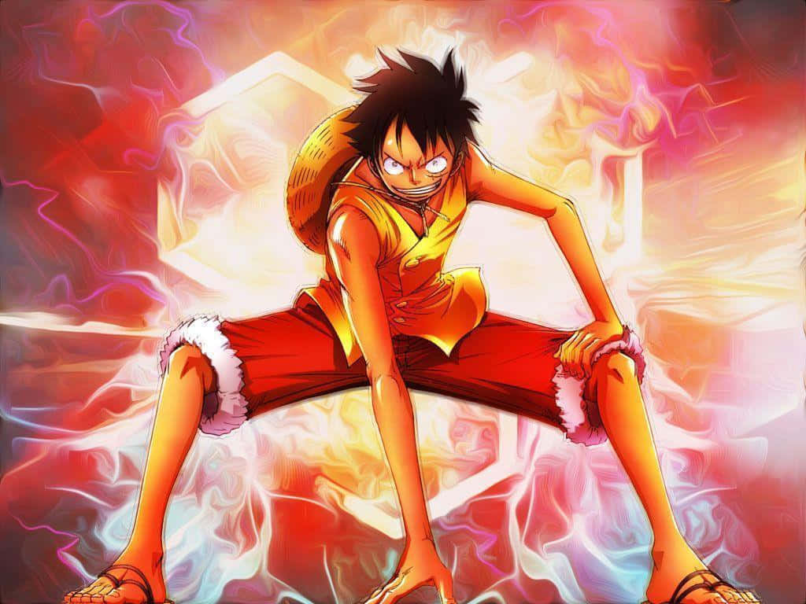 |
| Roronoa Zoro | Three-Sword Style Swordsmanship | 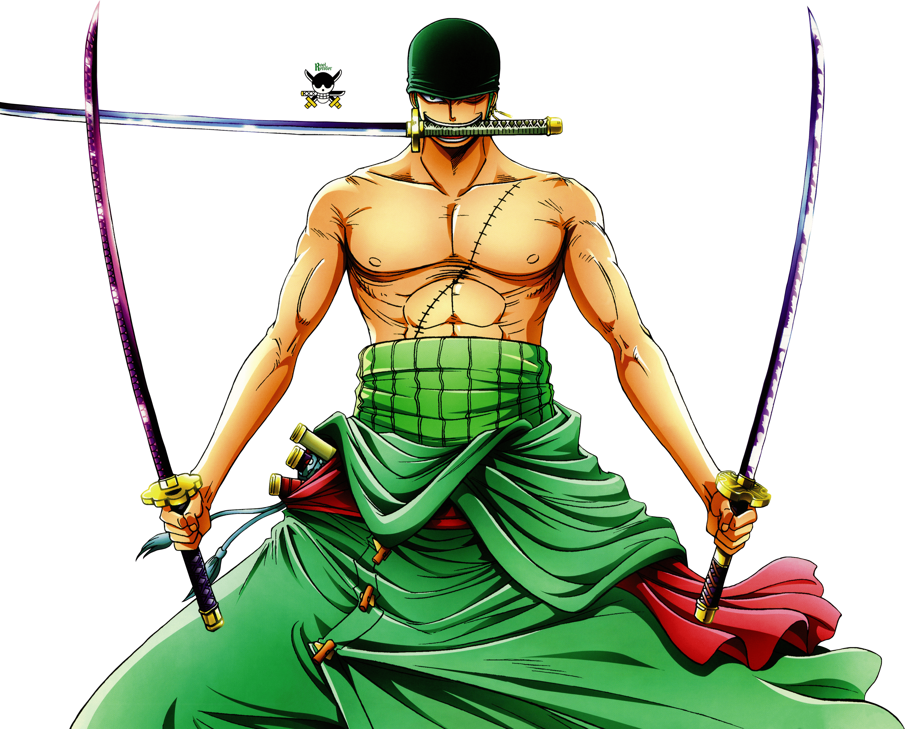 |
| Nami | Navigational Expertise | 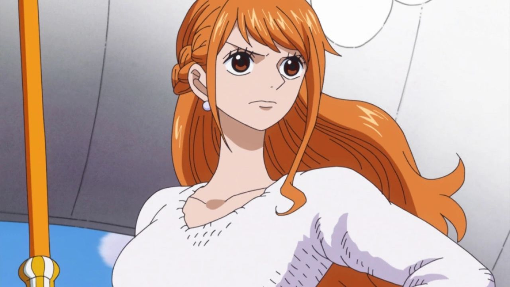 |
| Usopp | Sharpshooting and Inventiveness | |
| Sanji | Black Leg Style Martial Arts | 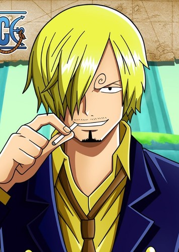 |
| Tony Tony Chopper | Human-Human Fruit Transformation | 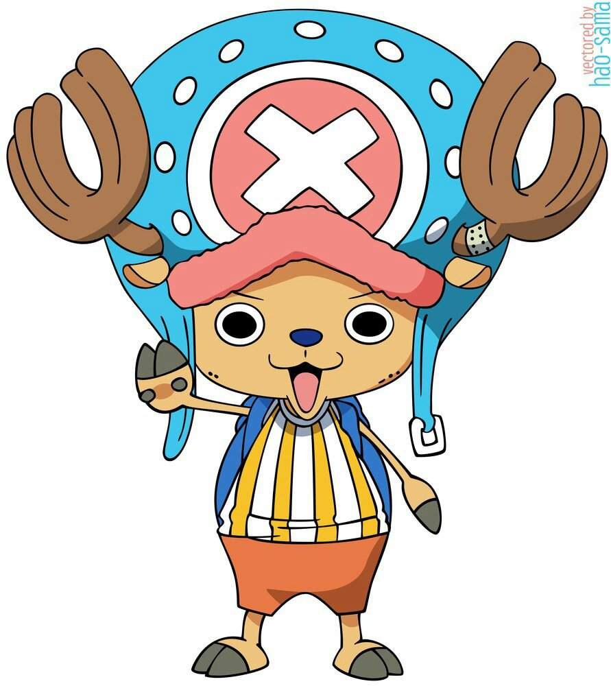 |
| Nico Robin | Floral Demons and Archaeological Knowledge | 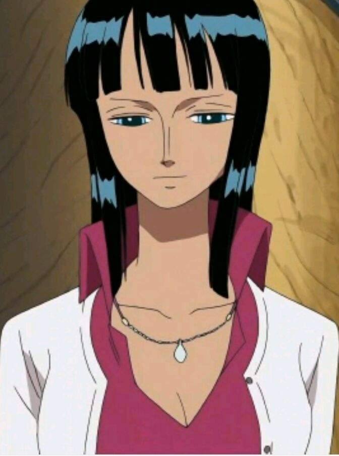 |
| Franky | Cyborg Enhancements | 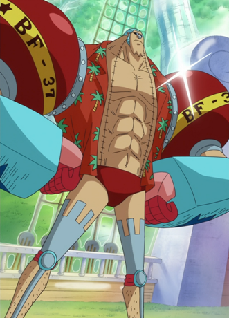 |
| Brook | Reanimated Skeleton (Revive-Revive Fruit) | 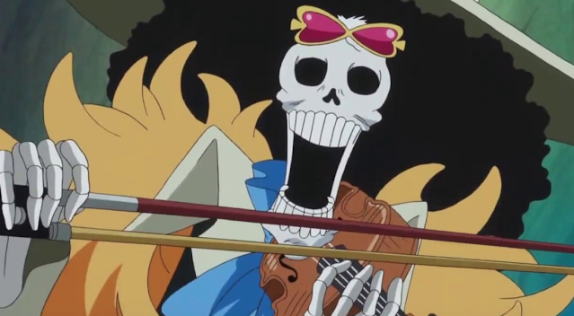 |
Monkey D. Luffy, the captain of the Straw Hat Pirates, possesses the power of the Gomu Gomu no Mi, which grants him a rubber-like body, allowing him to stretch and bounce. He is on a quest to become the Pirate King.
Roronoa Zoro is the swordsman of the crew and wields three swords. He is a master of the Three-Sword Style and dreams of becoming the world's greatest swordsman.
Nami is the crew's navigator and an expert in cartography and navigation. She is essential for guiding the crew safely through the Grand Line and has a deep passion for creating precise maps of uncharted territories.
Usopp is the crew's sharpshooter and a talented inventor. He's known for his incredible marksmanship with his slingshot and for creating various gadgets and weapons to assist the crew in their adventures.
Sanji is the Straw Hat Pirates' cook and a skilled martial artist. He fights using his powerful legs, known as the Black Leg Style, and is known for his chivalrous nature and love of beautiful women.
Tony Tony Chopper is a reindeer who gained human-like abilities after consuming the Human-Human Fruit. He serves as the crew's doctor and has various forms he can transform into, each with unique abilities.
Nico Robin is the crew's archaeologist and possesses the power of the Devil Fruit, allowing her to create extra limbs called "Floral Demons." She's also a highly knowledgeable scholar and invaluable in deciphering ancient texts.
Franky is the crew's shipwright and a cyborg with numerous enhancements. He built the crew's ship, the Thousand Sunny, and is known for his eccentric personality and love of building incredible machines.
Brook is a reanimated skeleton due to the powers of the Revive-Revive Fruit. He is the crew's musician and has the ability to use the power of the Soul-Soul Fruit to interact with souls and perform unique abilities with his music.
Enjoy an introduction to One Piece with this YouTube video:
| Name | Specialty | Image |
|---|---|---|
| Tanjirou Kamado | Water Breathing Swordsmanship | 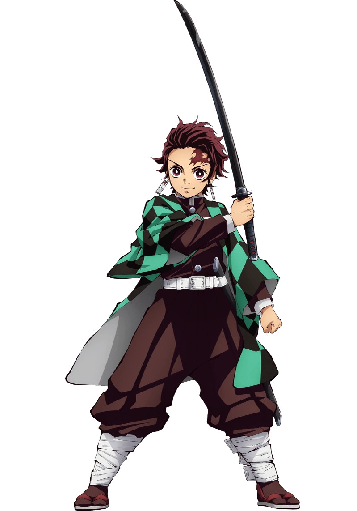 |
| Nezuko Kamado | Demon Powers | 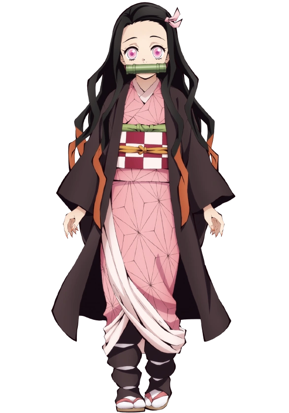 |
| Zenitsu Agatsuma | Thunder Breathing Swordsmanship | 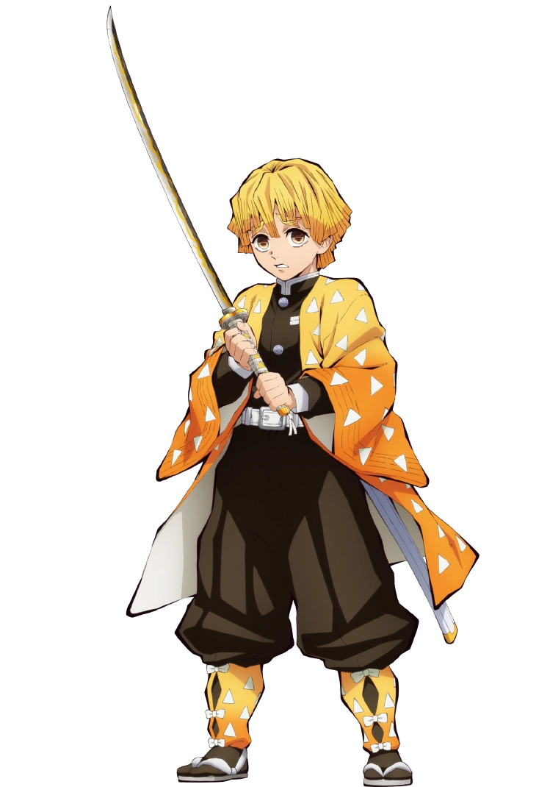 |
| Inosuke Hashibira | Beast Breathing Swordsmanship | 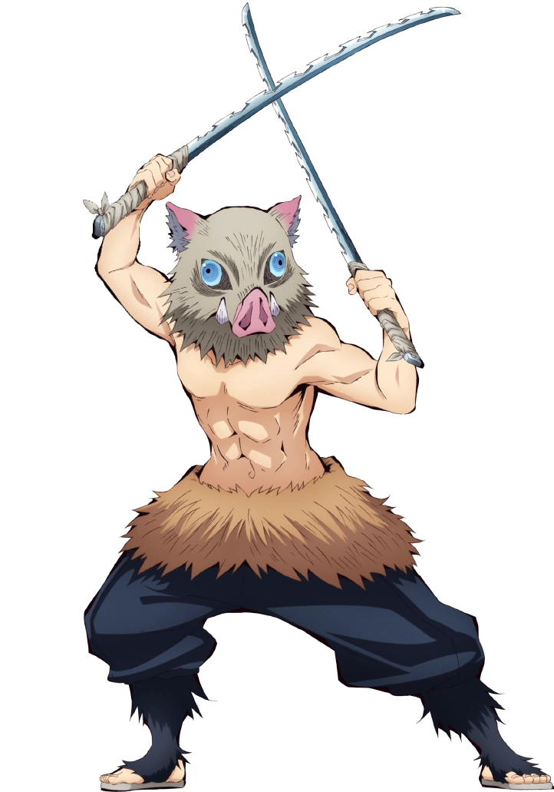 |
Tanjirou Kamado is the main protagonist of Demon Slayer. He is a Water Breathing swordsman on a quest to avenge his family and defeat demons with his keen swordsmanship.
Nezuko Kamado is Tanjirou's younger sister, who has been turned into a demon. Despite this, she retains her humanity and fights alongside her brother to protect others.
Zenitsu Agatsuma is a member of the Demon Slayer Corps and uses Thunder Breathing techniques. He may be cowardly, but he shows great bravery when it counts.
Inosuke Hashibira is a wild and feral member of the Demon Slayer Corps who utilizes Beast Breathing techniques. He is known for his boar mask and aggressive nature.
Enjoy an introduction to Demon Slayer with this YouTube video:
| Name | Specialty | Image |
|---|---|---|
| Naruto Uzumaki | Shadow Clone Jutsu | 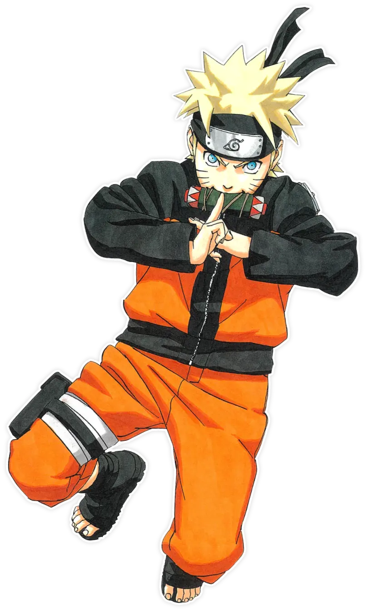 |
| Sasuke Uchiha | Sharingan | 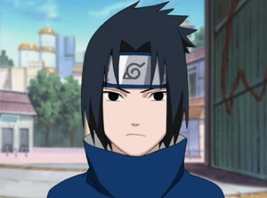 |
Naruto Uzumaki is the main protagonist of Naruto. He is a skilled ninja and possesses the ability to use the Shadow Clone Jutsu. Naruto's dream is to become the Hokage and gain the recognition of the villagers of Konoha.
Sasuke Uchiha is a talented ninja with the Sharingan eye technique. He is driven by a desire for revenge against his brother, Itachi. Sasuke's journey takes him on a path of power and darkness.
| Name | Specialty | Image |
|---|---|---|
| Madara Uchiha | Sharingan and Wood Release |  |
| Itachi Uchiha | Sharingan and Tsukuyomi | 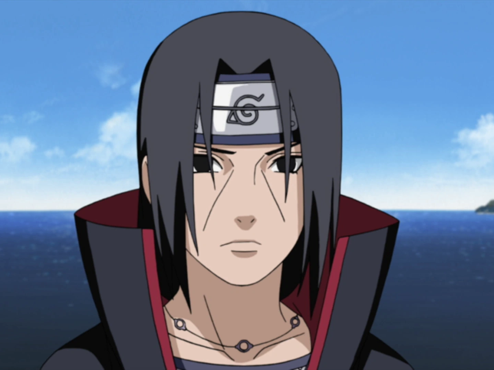 |
Madara Uchiha is one of the most powerful and feared Uchiha clan members. He played a major role in the history of the ninja world and was a formidable adversary for Naruto and his friends.
Itachi Uchiha is a complex character who was once a member of the Konoha's Anbu and later a rogue ninja. His actions, including a fateful battle with Sasuke, are central to the plot of Naruto.
Enjoy an introduction to Naruto with this YouTube video:
You can watch "Naruto" on streaming platforms:
Watch on Example Streaming ServiceIf you're new to the world of anime and looking for a captivating film to start with, "Your Name" (Kimi no Na wa) is an excellent choice. This enchanting anime movie directed by Makoto Shinkai has garnered worldwide acclaim for its beautifully animated visuals, heartwarming story, and unforgettable characters.
| Name | Role | Image |
|---|---|---|
| Taki Tachibana | Hero |  |
| Mitsuha Miyamizu | Heroine |  |
"Your Name" tells the tale of Taki Tachibana and Mitsuha Miyamizu, two young individuals living in different worlds. Taki is a high school boy in Tokyo, while Mitsuha is a girl from a rural town. Their lives become inexplicably intertwined when they begin switching bodies during their dreams. As they navigate this extraordinary connection, they embark on a quest to unravel the mysteries of their bond and find each other, even when they are separated by time and space.
Get a glimpse of the magic in "Your Name" by watching the trailer on YouTube:
You can watch "Your Name" on streaming platforms:
Watch on Example Streaming Service| Name | Quirk | Image |
|---|---|---|
| Izuku Midoriya | One For All | 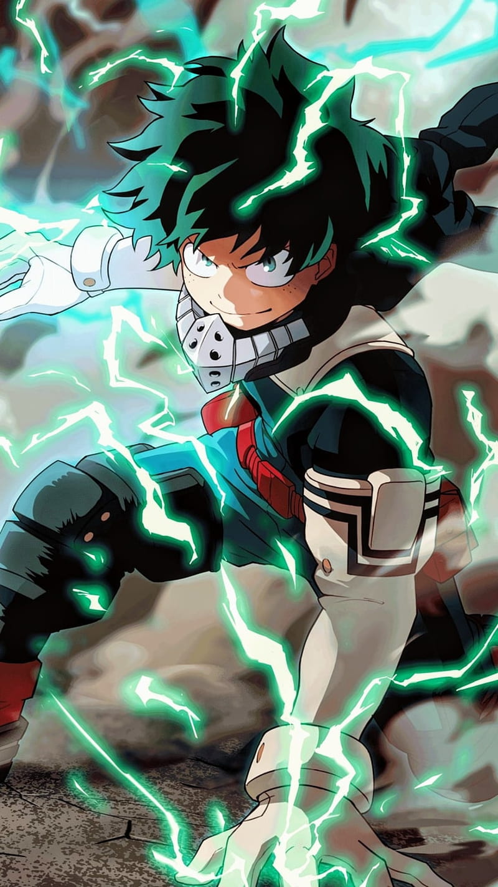 |
| Katsuki Bakugo | Explosion | 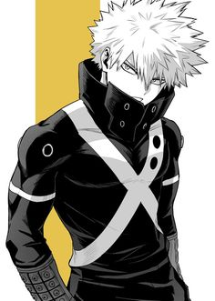 |
| Name | Quirk | Image |
|---|---|---|
| All For One | Quirk Absorption | 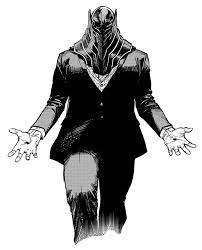 |
| Tomura Shigaraki | Decay | 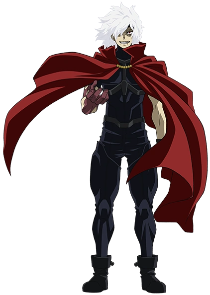 |
"My Hero Academia" is a popular anime series set in a world where nearly everyone possesses superpowers known as "Quirks." The story follows Izuku Midoriya, a Quirkless boy who aspires to become a hero and follows his journey as he inherits the legendary "One For All" Quirk. The anime explores themes of heroism, friendship, and the challenges of achieving one's dreams in a world filled with both heroes and villains.
Explore the world of My Hero Academia with this YouTube video: